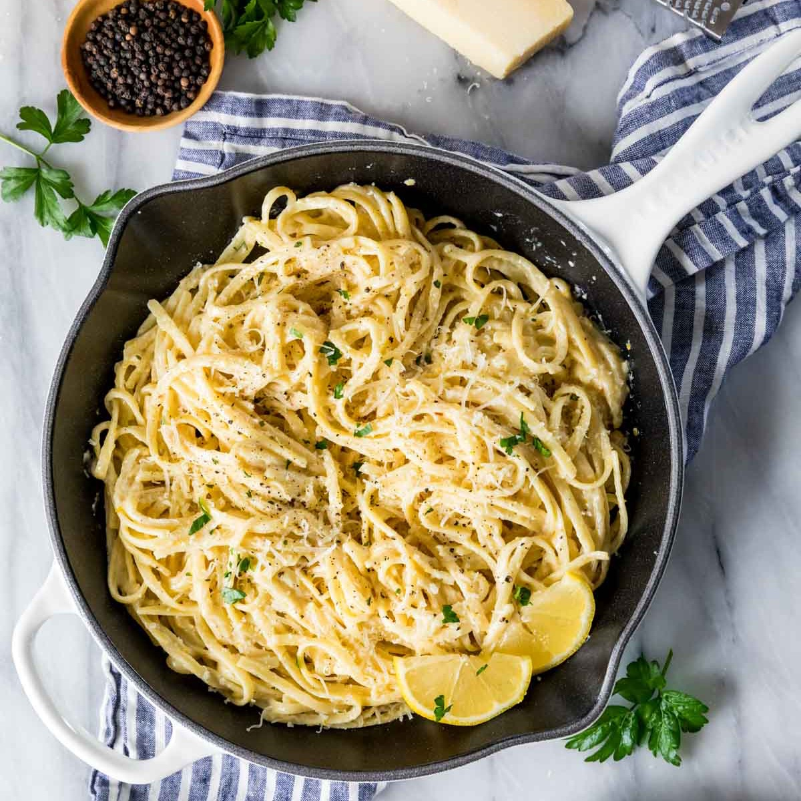

Lemon Pasta

This Lemon Pasta recipe can be ready in just 30 minutes! It’s made with
a creamy, fresh lemon sauce and pairs perfectly with chicken or shrimp.
Makes a great weeknight dinner! Recipe includes a how-to video!
Ingredients
- 8 oz (226 g) spaghetti noodles or use your favorite pasta
- 2 Tablespoons (30 ml) olive oil
- 2 Tablespoons (28 g) unsalted butter
- 1 heaping Tablespoon finely chopped shallot see note
- ⅛ teaspoon crushed red pepper
- 2 Tablespoons lemon zest
- 2 Tablespoons lemon juice freshly squeezed
- ¾ cup (177 ml) heavy cream
- ½ cup freshly grated parmesan cheese plus additional for topping
- ½ teaspoon table salt plus more to taste
- ½ teaspoon ground black pepper plus more to taste
- Fresh chopped parsley for garnish optional
Recommended Equipment
- Medium-sized saucepan
- Skillet
- Whisk
Instructions
- Bring a large pot of well-salted water to a boil. Once boiling, cook pasta according to package instructions. Once pasta has cooked, reserve about 1 cup of pasta water before draining noodles. While pasta is cooking, begin preparing lemon sauce.
- In a large saucepan, combine oil and butter over medium heat.
- Once butter is melted, add shallot, lemon zest, and crushed red pepper and cook until shallot is translucent (if substituting garlic, cook just until garlic is fragrant/30 seconds).
- Whisk in 2 Tablespoons of lemon juice until combined.
- While whisking constantly, slowly drizzle in heavy cream and whisk until combined.
- Bring mixture to a simmer (while stirring frequently). Once simmering, reduce heat to low and add parmesan cheese, salt, and pepper.
- Add warm, cooked spaghetti to the pan along with a splash (2-3 Tablespoons) of pasta water. Toss together over low heat until pasta is well combined and well coated with the sauce.
- Top with fresh parsley, if desired, and serve.
Notes
- Shallots: May substitute 2 teaspoons of minced garlic
- Parmesan: Using freshly grated parmesan (without any anti-caking additives) is critical, otherwise the cheese will not melt smoothly
- Protein: This dish goes well with grilled chicken orshrimp. I typically cook separately then serve over the pasta
Nutrition
Serving: 1 | Calories: 532kcal | Carbohydrates: 46g | Protein: 13g | Fat: 33g | Saturated Fat: 17g | Polyunsaturated Fat: 2g